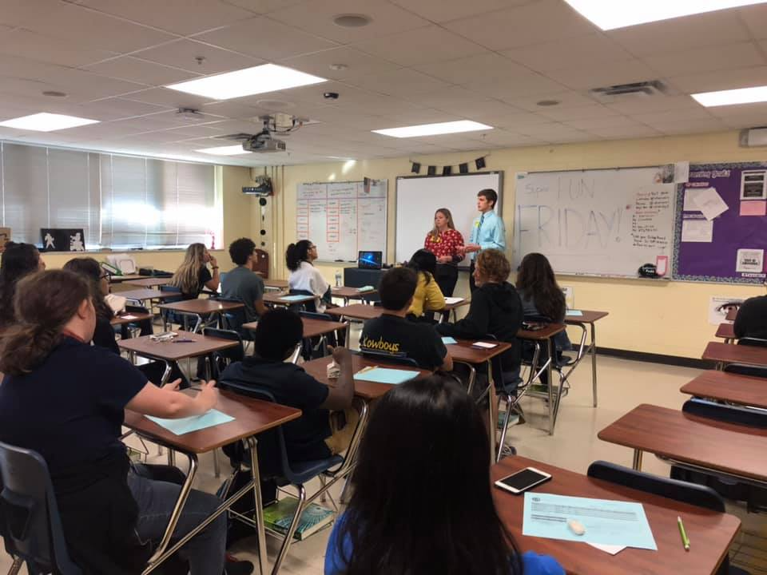

Overview
Science, Technology, Engineering and Mathematics (STEM), is the future of our world. STEM related programs and careers have grown so
much within the past 10 years, and continue to grow everyday. Young children, and students are surrounded by technology in their personal
lives and in academia. Being surrounded by technology everyday can spark early interest in robotics, engineering, and other large industries
that make up STEM related careers. The Global Window on Higher Education mentions that it is necessary for higher education instituates
to involve themselves in education outreach to contribute to aligning the curricula with the needs of their community. K-12 Outreach is so
important in every grade and I will be discussing why it is important on each level.
Many interests and hobbies are formed at a young age. Technology is growing so rappidly, that kids today might not get a chance experience
simple, yet useful parts of technology. Introducing the basics of technology and simple technology projects to Elementary students, helps spark an
interest for technology and keeps their interest for future project. While many young students may already have an idea of what technology is,
as it surrounds their everyday lives, they are never too young to begin learning the basics of technology, how it works, and what path they are
able to take with technology.

Outreach in Junior High is probably the most important because students get to apply the basics of technology to challenging projects that stimulate the brain.
When STEM is included in education, the ambitious structural practices help students solve and engage in real-world problems. Coding is a great
way to learn how to problem solve, as the program will not run if there is an error, and most programs give you an idea of where you made a mistake.
Activities and projects like this really help students understand how technology works and how to solve problems on their owm. This is important in
Middle school because students are just starting to find what their interested in and how to problem solve in other areas other than coding.
High school is when K-12 Outreach hits its peak. When young professionals and students in related fields come to speak or give students tours
around campus, it gives students transitioning into college the opportunity to ask questions in a personal setting. Many times, students don't ask
questions in large crowds because they are too shy, but when you are reaching out and serving these students they are in a much more comfortable
sitation to ask questions about college and the coursework. One of the best things about High School Outreach is making connections with incoming
students, giving them a familiar face on campus when they become a little fish in a big pond. Overall, K-12 Outreach not only helps students interested
in STEM grow, but it helps our community and future grow.

 Rhiannon Jacobson
Rhiannon Jacobson